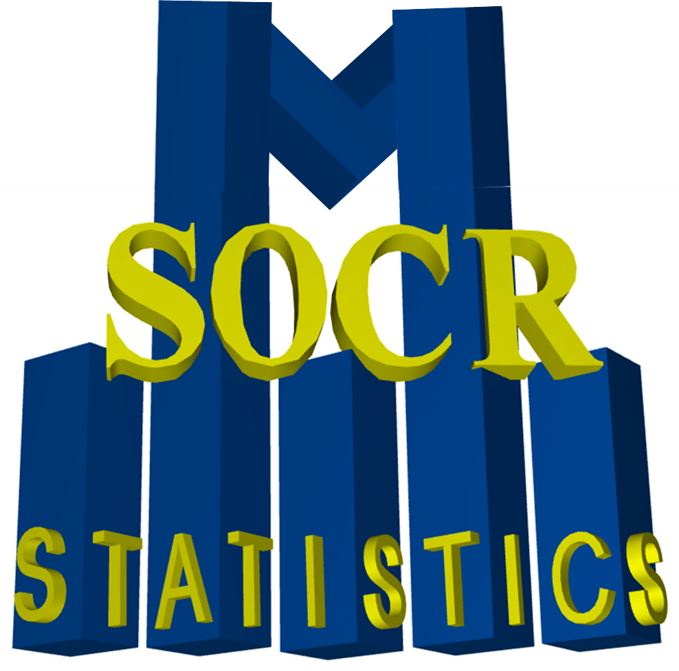

SOCR
RSS
About
About SOCR
News and Events
SOCR Team
Geo-Map
Contact
News/Events
Publications
Recognitions
Brochure
Funding
Donations
Acknowledgments
Citing/Licences
SOCR Wiki
SOCR Servers
Documentation
Download
Language Translation
SOCR Resource Navigator
Carousel Viewer
Contact
Java Applets
Java 1.6 Applets
Distributions
Experiments
Modeler
Analyzes
Charts
Games
Web-Start
Legacy Java 1.5 Applets
Webapps
Distributome Navigator
Distributome Webapps
Bivariate Normal Distribution Calculator
Violin Chart
Randomization and Resampling Webapp
Probability Tables
Other SOCR HTML5 Webapps
More
High-Precision Calculators
Probability Tables
Function and Image-Processing Applets
Other Java Applets
Get Started
Videos
Help Pages
Activities
Courses
Webapps and Resources
Tables
New Webapps
Precision Calculators
Java Applets
Distributions
Experiments
Analyses
Data Modeler
Charts and Graphs
Games
Learning Materials
EBook
Datasets
Activities
Contribute to SOCR
Donations
SOCR Projects
Events
Forum
Survey

PubMed Visualization
Double click on author's name to display coauthors. Right click to search in google.
Search author, topic or title:
« Previous 10
1
2
3
4
5
6
7
8
9
10
Next 10 »
{kind=link}
{kind=link}